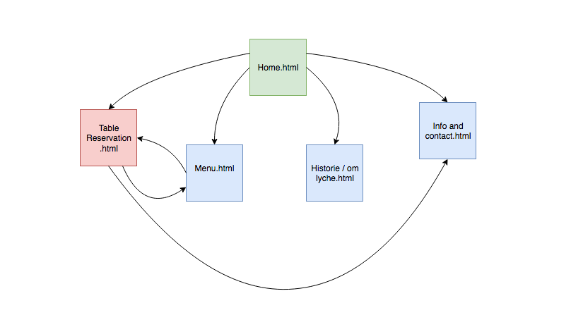

21. september 2018
This web page is made for the subject IT2805, fall 2018 as part P1 of the group project. We have chosen to make a web page for the resturant Lyche, located at Studertersamfundet in Trondheim.
The client we want to cooperate with is Lyche resturant. It is run exclusively on volunteer work by students and is an important meeting point for students in Trondheim. One of the group members, Merete, works at the resturant. Merete is the PR an Profile responsible for the restaurant together with Alexander Wang and they saw the need for a webpage like this. They are both very excited for this project, and we are closely collaborating with them.

The main purpose with the webpage for Lyche is to raise awareness to all students and people in Trondheim, this is one of many opportunities you will find at the big, round, red house, very popular amongst students in Trondheim. It's the house right across Elgseterbru, you guessed right, of course we're talking about STUDENTERSAMFUNDET.
Studentersamfundet is not a place you will regret visiting when in Trondheim, either you traveling by or if you´re just so lucky living in the city. This house needs to be experienced - amongst cafes, clubs and pubs you will find the very famous (for students anyhow) Lyche restaurant. Lyche is the perfect place to relax after a long day of studying, eat delicious food, enjoy a drink (or three), chilling with friends or if you just need a change in your study environment - it's room for everyone!
The goal with the page is to make it easy for everyone to see what Lyche has to offer; history of the restaurant, easy to get access to information about the excellent food the restaurant has to offer, possibilities for reservations and information about the staff.
It will be easy for visitors of the page to see dishes Lyche servers, the vision is to have pictures of tempting dishes served of the menu. Since the restaurant offers seasonal selection it has to be easy to update the site with pictures of new dishes as well as the menu.
Large part of the inhabitants and tourists in Trondheim are international. To reach everyone it's important that the page can be read in English as well as Norwegian. To make this possible the idea is to have a “English”-button on the page, so when you click the button you´ll have the page translated to English.
The websites main audience will be people who are curies of either the history, concept or menu of Lyche restaurant. Lyche has something for everyone; vegetarian, international, hangover-cure burger and a drink or local brewed beer if you are thirsty. All of these are possible visitors of the website. The restaurant is student driven and the food is affordable, even on a small budget. Hence the websites target group are student.
We wish to have a simple and well-organized page for Lyche, with just the info the audience are looking for. Pages and the linking between pages are shown in the diagram below.
This will be the first page of the website, the homepage and welcoming page. There will not be much information or functionality on this page, except navigation to the other pages, and a picture of lyche together with some short introductory text. There will be a header and a footer of some sort, that will follow through all of the underlying pages.
This will be a page with the history of lyche. It will cointain information about how the resturant started, and how it had changed, alongside pictures of this.
This will contain a full menu for the resturant, and pictures of some of the dishes. From menu it will be possible to navigate to the reservation site.
This page will contain a form for resarvation. This form will have fields that are needed to make the reservations that had to be filled in, alongside an “other comments” field that the customer will not have to fill out, but can fill out if needed. This form will then be formated and sent to lyche as a mail, on their booking mail. This will be the solution as they do not have another system than mail for reservations. From the reservation site it will also be possible to navigate to the resturans menu, and the contact-page.
This page will hold information about the address, the opening hours, and how to contact the resturant. There will also be link to samfundet, lyches facebook and other social media.
The vision is to make the final location the site can be visited from at: lyche.samfundet.no. At this moment in the prosess the page can be found here, at url: http://org.ntnu.no/lyche/P1/P1_requirements_19.html. It can also be fount at github where we will keep updating the project as we go. This can be found here.
The goal is to have decent-sized pictures of the resturant and food without resulting slowing down the webpage and injuring the quality of pictures.